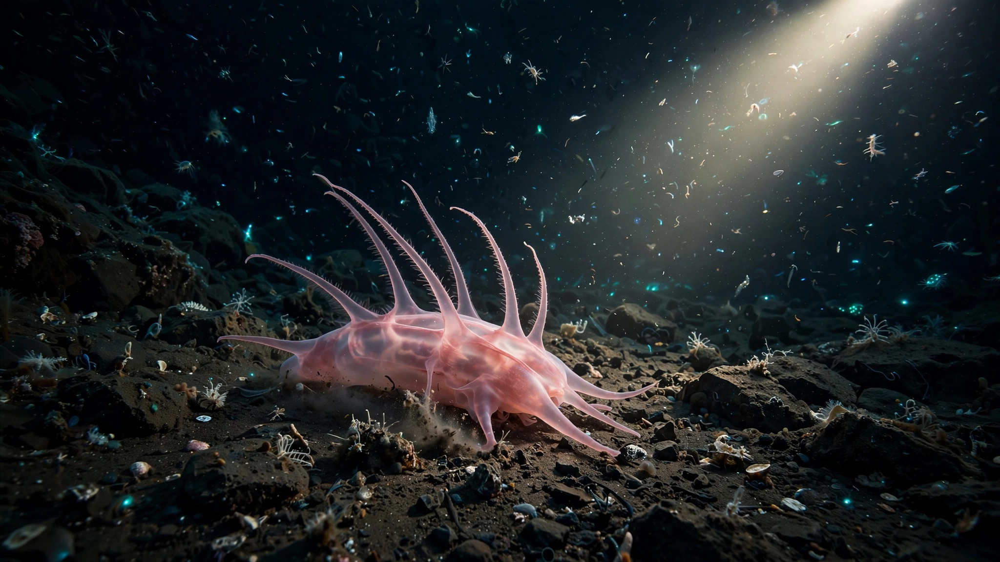
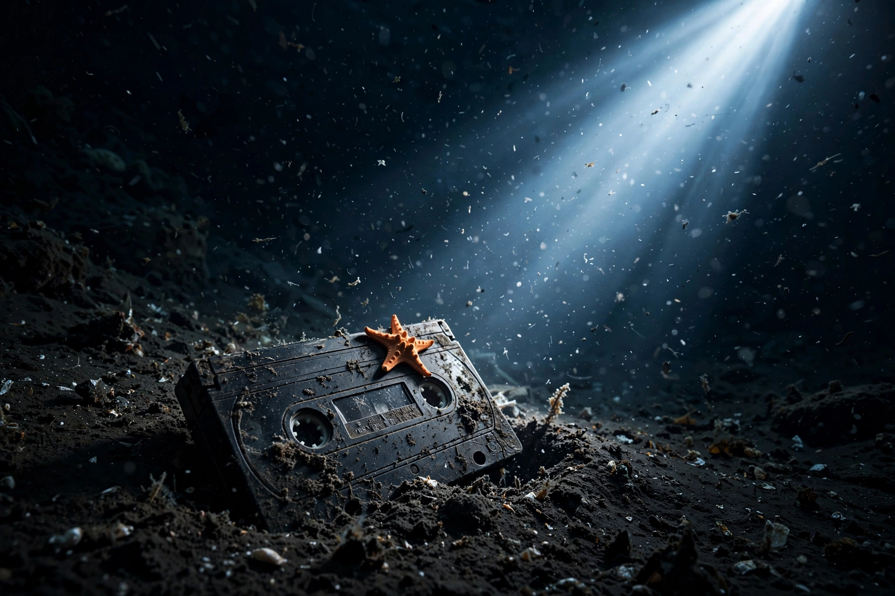
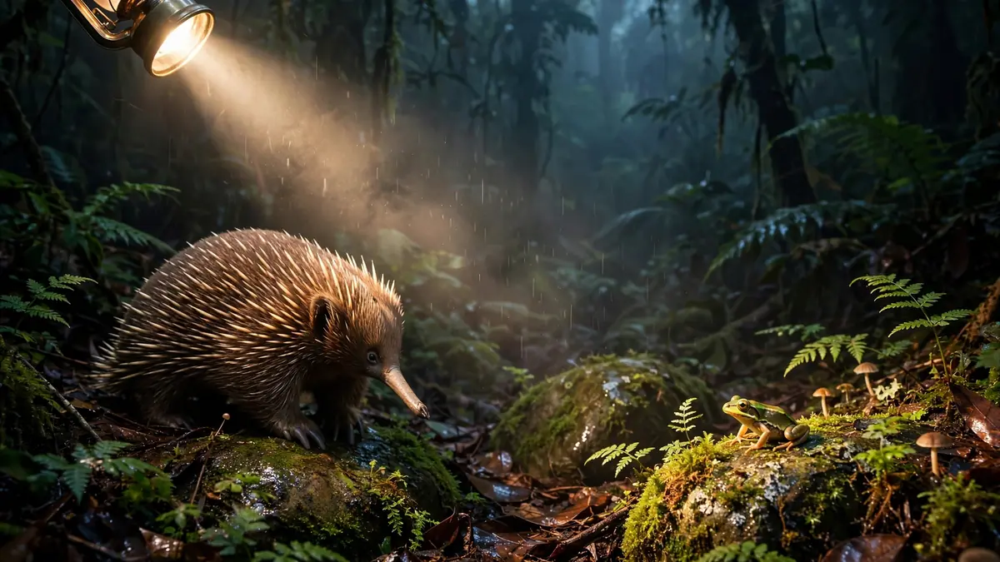
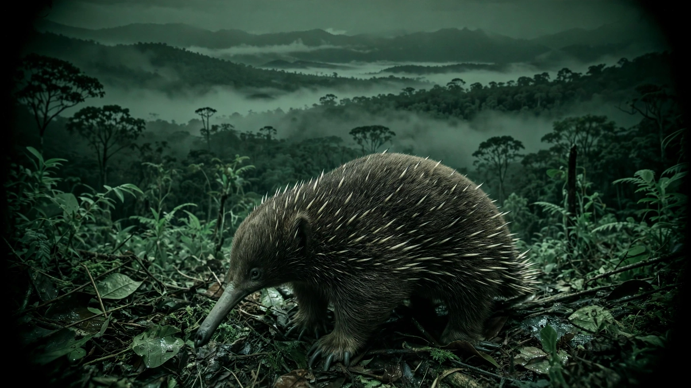
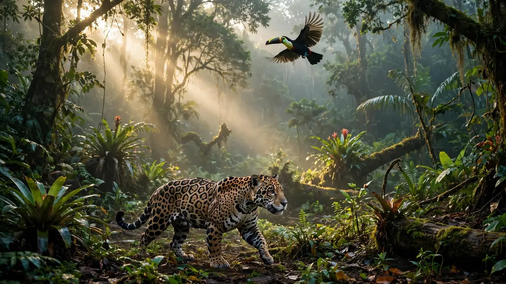
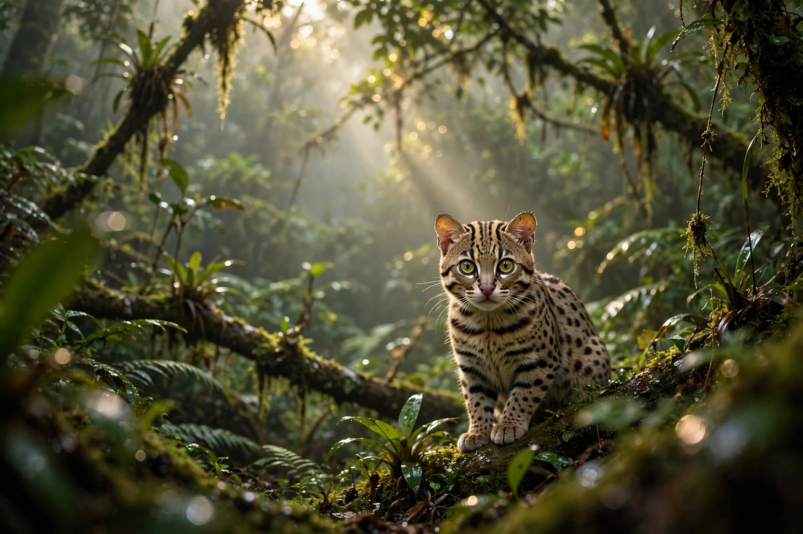
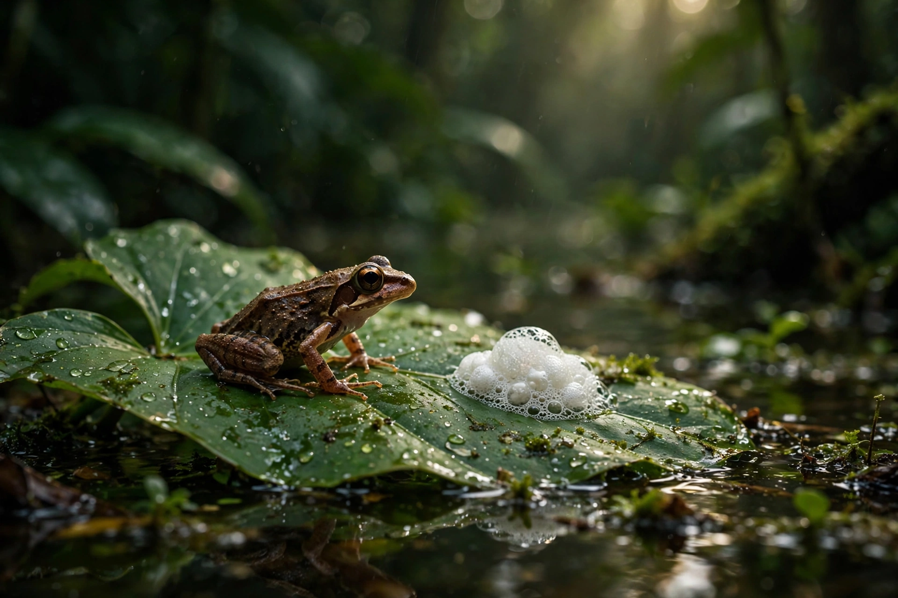
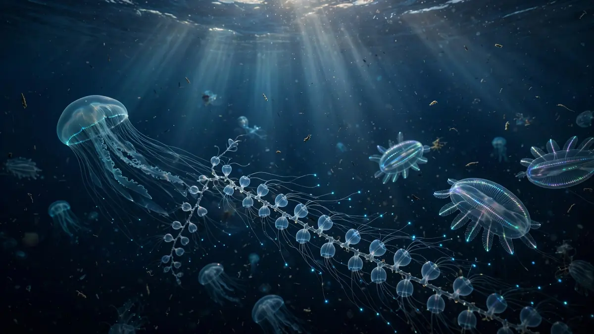
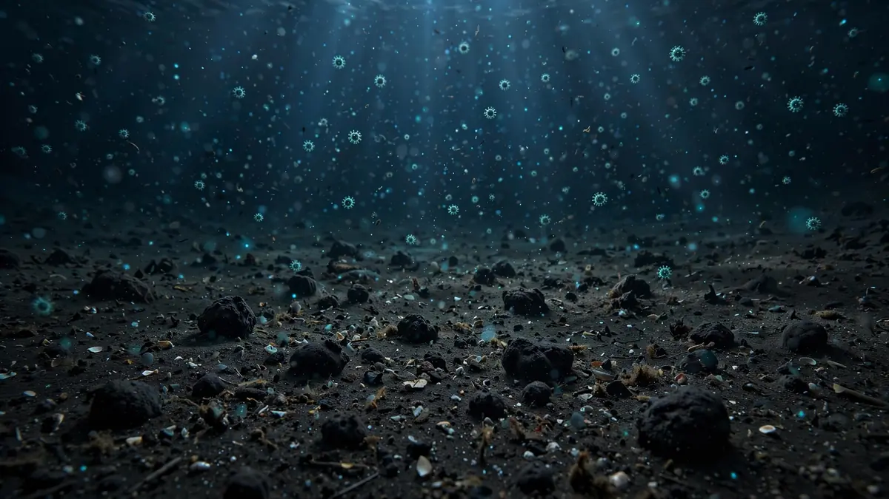

Lo que todo el mundo está comentando, verificado por nuestro equipo y explicado con claridad.

Una expedición en el cañón Mar del Plata halló 57 especies nuevas para la ciencia, incluido el 'pepino de mar Loki'. Así fue el hallazgo.

Un robot halló un casete VHS a 2.640 metros de profundidad, colonizado por una estrella de mar. La imagen viral que avergüenza a la humanidad.
El método de 5 pasos que usan los verificadores profesionales para detectar noticias falsas en 60 segundos, más 7 señales de alerta.

El pepino de mar Loki, el felino de hace 1,4 millones de años, la equidna perdida 62 años: los 5 hallazgos de fauna que marcaron 2026.
Las plumas de hielo de Encélado concentran los ingredientes de su océano oculto. Una futura sonda podría analizarlos buscando señales de vida.

La equidna de Attenborough, un mamífero que pone huevos, reapareció en Papúa 62 años después de su último registro. La historia del hallazgo.

El Informe Planeta Vivo 2026 (WWF y ZSL) documenta una caída del 73% en la fauna silvestre. Datos, causas y caminos de recuperación.

Leopardus tilcayo es el primer felino descrito en un siglo. La genómica reveló que se separó hace 1,4 millones de años. Te contamos el hallazgo.

Científicos de Brasil y Ecuador describieron Adenomera varcena, una rana de nido de espuma de la várzea amazónica. Por qué la taxonomía salva especies.

El buque Falkor exploró la 'media agua' del Atlántico Sur y halló 31 especies desconocidas: medusas, sifonóforos y ctenóforos de otro mundo.

Un estudio en Nature Communications halló 11.742 grupos de virus en el fondo del Pacífico; el 99% era desconocido. Qué significa (y qué no).